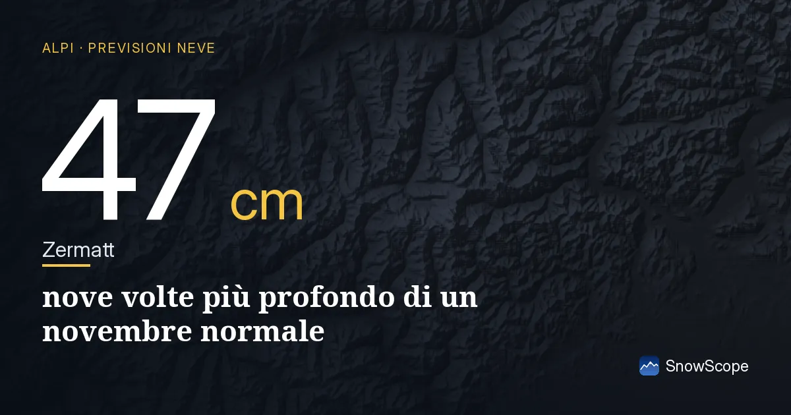

Zermatt 47 cm: nove volte più profondo di un novembre normale
Zermatt sta andando molto avanti rispetto al decennio passato. I versanti superiori hanno 47 cm oggi, quasi sette volte la profondità che normalmente vediamo a metà novembre a questa altitudine.
Le previsioni neve in tempo reale per Zermatt nell'app SnowScopeAltezza neve, allerte powder e mappa 3D, gratis.
Quanto è rara questa profondità di neve?
Quando guardo i versanti superiori di Zermatt a 2716 m, la profondità oggi è 47 cm. Questo è il 690% di quello che ci aspettiamo per questa data. In altre parole: in nove inverni su dieci, Zermatt avrebbe meno neve di quella che ha oggi. La profondità normale a metà novembre è circa 31 cm; gli inverni più nevosi raggiungono 56 cm. Siamo già ben nella fascia superiore.
Tre giorni fa, il 16 novembre, le Alpi come regione stavano perdendo copertura nevosa. Avevamo 63.230 km2 di terreno coperto di neve. Oggi siamo scesi a 60.480 km2. Ma le stazioni stesse rimangono ben fornite. La neve non sta scomparendo velocemente; si sta spostando e assestando. Il livello 0°C si è mantenuto stabile intorno a 2200-2460 m a Zermatt, mantenendo i versanti superiori freddi.
| Località | Altezza neve | Neve fresca, 72 h | In arrivo, prossimi giorni | Quota max |
|---|---|---|---|---|
| Zermatt | 47 cm | 61 cm | 77 cm | 3.872 m |
| La Grave | 105 cm | 77 cm | 104 cm | 3.543 m |
| Alpe d'Huez Grand Domaine | 71 cm | 59 cm | 91 cm | 3.306 m |
| Les Arcs | 64 cm | 81 cm | 96 cm | 3.205 m |
| La Plagne | 38 cm | 68 cm | 90 cm | 3.058 m |

Pioggia e neve: dove cade la linea
La domanda sul terreno in questo momento è semplice: dove la pioggia si trasforma in neve? Nei prossimi quattro giorni, il livello 0°C nelle Alpi oscillerà. Oggi varia da 2060 m al minimo (prime ore del mattino, versanti esposti a nord) a 2760 m al massimo (ore più calde del giorno). Entro venerdì, cadrà bruscamente. Il livello di congelamento di venerdì scenderà tra 1510 m e 2520 m in tutta la regione.
A Zermatt, la linea della neve durante le ore più calde del giorno si situa intorno a 2200 m oggi e giovedì. Questo significa che pioggia sta cadendo su erba e roccia sotto 2200 m, e neve sopra. Venerdì porta un punto di svolta: la linea della neve a Zermatt scende a 2200 m di nuovo al mattino e vi rimane. Sabato crolla a 1300 m. Questo è un regalo per le stazioni di media montagna che hanno lottato per mantenere quello che poco avevano.
Nessuna pioggia sul manto nevoso in quota
Un rischio che osserviamo attentamente all'inizio della stagione è la pioggia che cade sulla neve consolidata. A Zermatt, non sta accadendo. La linea della neve rimane al di sotto della base a 1559 m per tutti e quattro i giorni. Il terreno superiore rimane nella zona di neve asciutta. Il livello 0°C alla base non sale mai al di sopra dello zero durante il giorno.
Più in basso, in stazioni come Alpe d'Huez Grand Domaine e Les Arcs, la linea della neve attraversa l'area sciabile la maggior parte dei giorni. Ma la base è sottile, e la massa d'aria che porta pioggia porta anche una raffica di aria fredda più tardi. Non vediamo un vero evento di pioggia su neve nel previsionale—un giorno con pioggia abbondante E un livello di neve alto E neve esistente sui versanti. Questo crusterebbe e indebolirebbe il manto. Siamo risparmiati da questo scenario.
Cosa sta arrivando nei prossimi quattro giorni
Zermatt riceverà circa 77 cm di neve nuova entro sabato sera, distribuiti su giovedì, venerdì e sabato. Questo è un accumulo affidabile in quota. Le precipitazioni si distribuiranno in quattro giorni, quindi non arriveranno come una sola valanga. Invece, le montagne guadagneranno copertura costante.
Confronta questo con stazioni più basse e più a ovest. La Grave, arroccata in alto a 3196 m di base, ha 105 cm di profondità oggi. Aggiungerà 104 cm nel periodo previsionale. Les Arcs, situata a 1222 m, ha 64 cm e aggiungerà 96 cm. Il pattern è coerente: le montagne alte rimangono fredde e asciutte, le montagne basse calde e bagnate. Venerdì è il giorno di transizione quando il livello di congelamento crolla e tutte le Alpi si spostano in modalità neve.
Cosa significa questo sui versanti
Se stai facendo skinning o escursionismo al di sopra di 2200 m a Zermatt questa settimana, troverai neve consolidata che è al sicuro dalla pioggia. Lo strato di base si sta ispessendo. Sotto 2200 m, aspettati pioggia oggi e giovedì, poi un cambio a neve venerdì e sabato mentre arriva aria fredda. Pianifica le tue ascese di conseguenza.
La storia qui non riguarda una singola tempesta. Riguarda la coerenza. L'inizio di novembre ha portato neve, altre è arrivata sabato e lunedì, e il previsionale chiude la settimana con polvere fresca in quota. Per metà novembre nelle Alpi, questo è nove volte migliore del normale.
Consigli per sciatori
- Scia al di sopra di 2300 m per stare in neve fredda. La pioggia sta cadendo sotto 2200 m oggi e domani. Il limite sale a 2300-2400 m a mezzogiorno ma scende di nuovo sotto 2200 m a Zermatt entro venerdì pomeriggio.
- Osserva attentamente il cambio di venerdì. Quando il livello 0°C scende da 2000 m a 1300 m a Zermatt tra giovedì e sabato, qualsiasi neve bagnata al di sopra di quella linea si ricongelerà. Il venerdì mattina presto offre una breve finestra di stabilità prima della transizione.
- Le stazioni inferiori guadagnano terreno venerdì e sabato mentre la linea della neve scende. Alpe d'Huez Grand Domaine (base 1124 m) vedrà neve arrivare a media montagna entro venerdì, aggiungendo 91 cm nella finestra previsionale.
- Controlla il bollettino valanghe ufficiale per la tua zona prima di sciare fuori pista. Neve fresca e un congelamento improvviso possono alterare la stabilità dei versanti.
Su questi numeri
Le altezze neve delle località sono la neve più alta sui pendii superiori secondo il modello neve di SnowScope (circa 1 km, calcolo del 18 novembre); sono stime per un'area, non una misura in un punto. I valori delle stazioni sono misure alla data indicata. Le previsioni possono cambiare. Leggi sempre il bollettino valanghe ufficiale prima del fuoripista.
Bollettini valanghe ufficiali: EAWS (Alps)
Cita questo articolo
Per ricerca, didattica o stampa: numeri e grafici sono liberamente riutilizzabili con licenza CC BY 4.0 citando così.
SnowScope (2026), Zermatt 47 cm: nove volte più profondo di un novembre normale, https://snowscope.app/blog/it/2026/11/alps-freezing-level-snow-line-18-november-2026.html, consultato il 2026-11-18
SnowScope (Atlas Labs). (2026, November 18). Zermatt 47 cm: nove volte più profondo di un novembre normale. SnowScope snow reports. https://snowscope.app/blog/it/2026/11/alps-freezing-level-snow-line-18-november-2026.html
BibTeX
@misc{snowscope2026alpsfreezinglevelsnowlin,
author = {{SnowScope (Atlas Labs)}},
title = {Zermatt 47 cm: nove volte più profondo di un novembre normale},
year = {2026},
month = nov,
howpublished = {\url{https://snowscope.app/blog/it/2026/11/alps-freezing-level-snow-line-18-november-2026.html}},
note = {Published 2026-11-18 12:57 UTC; accessed 2026-11-18}
}· CC BY 4.0 · Metodi, dati e strumenti →
Zermatt: neve e temperatura per quota, quest'inverno vs lo scorso (strumenti) →
Segui Zermatt
Gratis: un messaggio quando arriva la neve e il meteo ogni mattina.